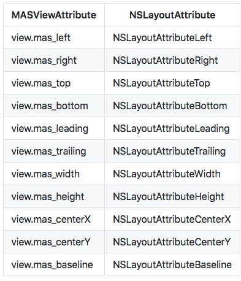

之前一直都是在使用storyboards来创建iOS布局，突然某一天看到使用代码布局后，界面元素的清晰易懂，就迷上了。。。
所以这次简单学习一下使用Masonry帮助构建iOS界面元素。
在阅读了Masonry的github主页之后，学习并安装了框架。
框架的安装
安装框架非常简单，我们只需要在podfile中加上下面一句：
pod 'Masonry'
之后为了语法的缩写以及代码自动补全我们来创建Code Snippets
mas_make -> [<#view#> mas_makeConstraints:^(MASConstraintMaker *make) { <#code#> }];
mas_update -> [<#view#> mas_updateConstraints:^(MASConstraintMaker *make) { <#code#> }];
mas_remake -> [<#view#> mas_remakeConstraints:^(MASConstraintMaker *make) { <#code#> }];
将上述语句放到~/Library/Developer/Xcode/UserData/CodeSnippets中，之后我们在写相关代码的时候就会有代码提示了。
我们在要使用Masonry的文件要频繁的导入"Masonry.h"头文件，所以为了方便，我们创建一个Supporting Files文件夹，并在其中创建一个prefix.pch文件。文件内容为：
//
// MBMasonry-Prefix.pch
#import <Availability.h>
// Include any system framework and library headers here that should be included in all compilation units.
// You will also need to set the Prefix Header build setting of one or more of your targets to reference this file.
#ifndef __IPHONE_3_0
#warning "This project uses features only available in iOS SDK 3.0 and later."
#endif
#ifdef __OBJC__
#import <UIKit/UIKit.h>
#import <Foundation/Foundation.h>
#import <QuartzCore/QuartzCore.h>
//define this constant if you want to use Masonry without the 'mas_' prefix
// 只要添加了这个宏，就不用带mas_前缀
#define MAS_SHORTHAND
//define this constant if you want to enable auto-boxing for default syntax
// 只要添加了这个宏，equalTo就等价于mas_equalTo
#define MAS_SHORTHAND_GLOBALS
//在这里导入头文件。
#import "Masonry.h"
#endif /* MBMasonry_Prefix_pch */
之后我们在使用的时候，就不用每个文件都导入一遍头文件了。
使用方法
原声的iOS代码，对界面布局使用的是NSLayoutAttribute，用了Masonry后，我们使用封装好的MASViewAttribute。具体的属性等价关系如下图所示：

我们来举例说明一下，假入我们想要创建一个登陆界面。界面中要有Name和Pass两个TextField，并对应两个Label。
那么我们可以按照如下方式来写：
//
// ViewController.m
// FirstRAC
//
// Created by 梁中豪 on 2017/10/17.
// Copyright © 2017年 梁中豪. All rights reserved.
//
#import "ViewController.h"
@interface ViewController ()
@property(nonatomic,strong) UIView *login;
@property(nonatomic,strong) UILabel *nameLabel;
@property(nonatomic,strong) UILabel *passLabel;
@property(nonatomic,strong) UITextField *name;
@property(nonatomic,strong) UITextField *pass;
@end
@implementation ViewController
- (void)viewDidLoad {
[super viewDidLoad];
self.login = [[UIView alloc] initWithFrame:CGRectZero];
_name = [[UITextField alloc] init];
_name.borderStyle = UIFontWeightBold;
_name.font = [UIFont systemFontOfSize:15];
_name.placeholder = @"Enter Name";
[_login addSubview:_name];
_pass = [[UITextField alloc] init];
_pass.borderStyle = UIFontWeightBold;
_pass.font = [UIFont systemFontOfSize:15];
_pass.placeholder = @"Enter Pass";
[_login addSubview:_pass];
_nameLabel = [[UILabel alloc] init];
_nameLabel.backgroundColor = UIColor.whiteColor;
_nameLabel.font = [UIFont systemFontOfSize:14.0];
_nameLabel.lineBreakMode = NSLineBreakByTruncatingTail;
_nameLabel.text = @"Name";
[_login addSubview:_nameLabel];
_passLabel = [[UILabel alloc] init];
_passLabel.backgroundColor = UIColor.whiteColor;
_passLabel.font = [UIFont systemFontOfSize:14.0];
_passLabel.lineBreakMode = NSLineBreakByTruncatingTail;
_passLabel.text = @"Pass";
[_login addSubview:_passLabel];
[self.view addSubview:_login];
[self buildElem];
}
//为所创建的控件，创建约束
- (void)buildElem{
[_login mas_makeConstraints:^(MASConstraintMaker *make){
make.left.right.and.bottom.equalTo(self.view);
make.top.equalTo(self.mas_topLayoutGuide);
}];
[_nameLabel mas_makeConstraints:^(MASConstraintMaker *make){
make.top.equalTo(_login.top);
make.height.equalTo(@20);
make.left.equalTo(_login.left).with.offset(20);
}];
[_passLabel mas_makeConstraints:^(MASConstraintMaker *make){
make.top.equalTo(_nameLabel.bottom).with.offset(10);
make.centerX.equalTo(_nameLabel.centerX);
make.height.equalTo(@20);
}];
[_name mas_makeConstraints:^(MASConstraintMaker *make){
make.left.equalTo(_nameLabel.right).with.offset(5);
make.centerY.equalTo(_nameLabel.centerY);
make.height.equalTo(@20);
}];
[_pass mas_makeConstraints:^(MASConstraintMaker *make){
make.left.equalTo(_passLabel.right).with.offset(5);
make.centerY.equalTo(_passLabel.centerY);
make.height.equalTo(@20);
}];
}
- (void)didReceiveMemoryWarning {
[super didReceiveMemoryWarning];
// Dispose of any resources that can be recreated.
}
@end
从上面可以看到，我们为元素创建了约束。当然这只是基本的方法。还有更多的API接口可以使用。我们这里就不在过多说明了。
大概知道上面的用法，我们就可以开心的撸代码写界面去了。
:smile:smile:smile:smile:smile:smile:smile: